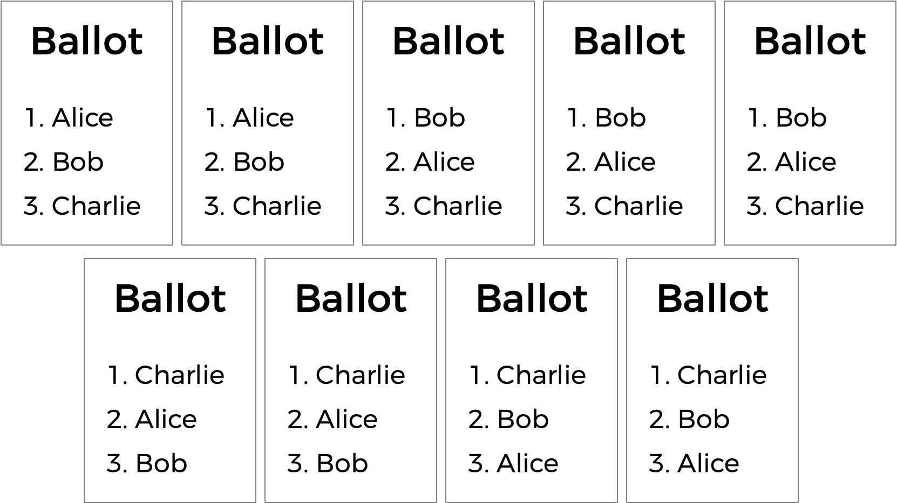

Runoff
Implement a program that runs a runoff election, per the below.
./runoff Alice Bob Charlie
Number of voters: 5
Rank 1: Alice
Rank 2: Bob
Rank 3: Charlie
Rank 1: Alice
Rank 2: Charlie
Rank 3: Bob
Rank 1: Bob
Rank 2: Charlie
Rank 3: Alice
Rank 1: Bob
Rank 2: Alice
Rank 3: Charlie
Rank 1: Charlie
Rank 2: Alice
Rank 3: Bob
Alice
Background
You already know about plurality elections, which follow a very simple algorithm for determining the winner of an election: every voter gets one vote, and the candidate with the most votes wins.
But the plurality vote does have some disadvantages. What happens, for instance, in an election with three candidates, and the ballots below are cast?

A plurality vote would here declare a tie between Alice and Bob, since each has two votes. But is that the right outcome?
There’s another kind of voting system known as a ranked-choice voting system. In a ranked-choice system, voters can vote for more than one candidate. Instead of just voting for their top choice, they can rank the candidates in order of preference. The resulting ballots might therefore look like the below.

Here, each voter, in addition to specifying their first preference candidate, has also indicated their second and third choices. And now, what was previously a tied election could now have a winner. The race was originally tied between Alice and Bob, so Charlie was out of the running. But the voter who chose Charlie preferred Alice over Bob, so Alice could here be declared the winner.
Ranked choice voting can also solve yet another potential drawback of plurality voting. Take a look at the following ballots.

Who should win this election? In a plurality vote where each voter chooses their first preference only, Charlie wins this election with four votes compared to only three for Bob and two for Alice. But a majority of the voters (5 out of the 9) would be happier with either Alice or Bob instead of Charlie. By considering ranked preferences, a voting system may be able to choose a winner that better reflects the preferences of the voters.
One such ranked choice voting system is the instant runoff system. In an instant runoff election, voters can rank as many candidates as they wish. If any candidate has a majority (more than 50%) of the first preference votes, that candidate is declared the winner of the election.
If no candidate has more than 50% of the vote, then an “instant runoff” occurrs. The candidate who received the fewest number of votes is eliminated from the election, and anyone who originally chose that candidate as their first preference now has their second preference considered. Why do it this way? Effectively, this simulates what would have happened if the least popular candidate had not been in the election to begin with.
The process repeats: if no candidate has a majority of the votes, the last place candidate is eliminated, and anyone who voted for them will instead vote for their next preference (who hasn’t themselves already been eliminated). Once a candidate has a majority, that candidate is declared the winner.
Let’s consider the nine ballots above and examine how a runoff election would take place.
Alice has two votes, Bob has three votes, and Charlie has four votes. To win an election with nine people, a majority (five votes) is required. Since nobody has a majority, a runoff needs to be held. Alice has the fewest number of votes (with only two), so Alice is eliminated. The voters who originally voted for Alice listed Bob as second preference, so Bob gets the extra two vote. Bob now has five votes, and Charlie still has four votes. Bob now has a majority, and Bob is declared the winner.
What corner cases do we need to consider here?
One possibility is that there’s a tie for who should get eliminated. We can handle that scenario by saying all candidates who are tied for last place will be eliminated. If every remaining candidate has the exact same number of votes, though, eliminating the tied last place candidates means eliminating everyone! So in that case, we’ll have to be careful not to eliminate everyone, and just declare the election a tie between all remaining candidates.
Some instant runoff elections don’t require voters to rank all of their preferences — so there might be five candidates in an election, but a voter might only choose two. For this problem’s purposes, though, we’ll ignore that particular corner case, and assume that all voters will rank all of the candidates in their preferred order.
Sounds a bit more complicated than a plurality vote, doesn’t it? But it arguably has the benefit of being an election system where the winner of the election more accurately represents the preferences of the voters.
Getting Started
Here’s how to download this problem’s “distribution code” (i.e., starter code) into your own CS50 IDE. Log into CS50 IDE and then, in a terminal window, execute each of the below.
- Navigate to your
pset3directory that should already exist. - Execute
mkdir runoffto make (i.e., create) a directory calledrunoffin yourpset3directory. - Execute
cd runoffto change into (i.e., open) that directory. - Execute
wget https://cdn.cs50.net/2020/fall/psets/3/runoff/runoff.cto download this problem’s distribution code. - Execute
ls. You should see this problem’s distribution code, in a file calledrunoff.c.
Understanding
Let’s open up runoff.c to take a look at what’s already there. We’re defining two constants: MAX_CANDIDATES for the maximum number of candidates in the election, and MAX_VOTERS for the maximum number of voters in the election.
Next up is a two-dimensional array preferences. The array preferences[i] will represent all of the preferences for voter number i, and the integer preferences[i][j] here will store the index of the candidate who is the jth preference for voter i.
Next up is a struct called candidate. Every candidate has a string field for their name, and int representing the number of votes they currently have, and a bool value called eliminated that indicates whether the candidate has been eliminated from the election. The array candidates will keep track of all of the candidates in the election.
The program also has two global variables: voter_count and candidate_count.
Now onto main. Notice that after determining the number of candidates and the number of voters, the main voting loop begins, giving every voter a chance to vote. As the voter enters their preferences, the vote function is called to keep track of all of the preferences. If at any point, the ballot is deemed to be invalid, the program exits.
Once all of the votes are in, another loop begins: this one’s going to keep looping through the runoff process of checking for a winner and eliminating the last place candidate until there is a winner.
The first call here is to a function called tabulate, which should look at all of the voters’ preferences and compute the current vote totals, by looking at each voter’s top choice candidate who hasn’t yet been eliminated. Next, the print_winner function should print out the winner if there is one; if there is, the program is over. But otherwise, the program needs to determine the fewest number of votes anyone still in the election received (via a call to find_min). If it turns out that everyone in the election is tied with the same number of votes (as determined by the is_tie function), the election is declared a tie; otherwise, the last-place candidate (or candidates) is eliminated from the election via a call to the eliminate function.
If you look a bit further down in the file, you’ll see that these functions — vote, tabulate, print_winner, find_min, is_tie, and eliminate — are all left to up to you to complete!
Specification
Complete the implementation of runoff.c in such a way that it simulates a runoff election. You should complete the implementations of the vote, tabulate, print_winner, find_min, is_tie, and eliminate functions, and you should not modify anything else in runoff.c (and the inclusion of additional header files, if you’d like).
vote
Complete the vote function.
- The function takes arguments
voter,rank, andname. Ifnameis a match for the name of a valid candidate, then you should update the global preferences array to indicate that the votervoterhas that candidate as theirrankpreference (where0is the first preference,1is the second preference, etc.). - If the preference is successfully recorded, the function should return
true; the function should returnfalseotherwise (if, for instance,nameis not the name of one of the candidates). - You may assume that no two candidates will have the same name.
Hints
- Recall that
candidate_countstores the number of candidates in the election. - Recall that you can use
strcmpto compare two strings. - Recall that
preferences[i][j]stores the index of the candidate who is thejth ranked preference for theith voter.
tabulate
Complete the tabulate function.
- The function should update the number of
voteseach candidate has at this stage in the runoff. - Recall that at each stage in the runoff, every voter effectively votes for their top-preferred candidate who has not already been eliminated.
Hints
- Recall that
voter_countstores the number of voters in the election. - Recall that for a voter
i, their top choice candidate is represented bypreferences[i][0], their second choice candidate bypreferences[i][1], etc. - Recall that the
candidatestructhas a field calledeliminated, which will betrueif the candidate has been eliminated from the election. - Recall that the
candidatestructhas a field calledvotes, which you’ll likely want to update for each voter’s preferred candidate.
print_winner
Complete the print_winner function.
- If any candidate has more than half of the vote, their name should be printed to
stdoutand the function should returntrue. - If nobody has won the election yet, the function should return
false.
Hints
- Recall that
voter_countstores the number of voters in the election. Given that, how would you express the number of votes needed to win the election?
find_min
Complete the find_min function.
- The function should return the minimum vote total for any candidate who is still in the election.
Hints
- You’ll likely want to loop through the candidates to find the one who is both still in the election and has the fewest number of votes. What information should you keep track of as you loop through the candidates?
is_tie
Complete the is_tie function.
- The function takes an argument
min, which will be the minimum number of votes that anyone in the election currently has. - The function should return
trueif every candidate remaining in the election has the same number of votes, and should returnfalseotherwise.
Hints
- Recall that a tie happens if every candidate still in the election has the same number of votes. Note, too, that the
is_tiefunction takes an argumentmin, which is the smallest number of votes any candidate currently has. How might you use that information to determine if the election is a tie (or, conversely, not a tie)?
eliminate
Complete the eliminate function.
- The function takes an argument
min, which will be the minimum number of votes that anyone in the election currently has. - The function should eliminate the candidate (or candidates) who have
minnumber of votes.
Walkthrough
Usage
Your program should behave per the example below:
./runoff Alice Bob Charlie
Number of voters: 5
Rank 1: Alice
Rank 2: Charlie
Rank 3: Bob
Rank 1: Alice
Rank 2: Charlie
Rank 3: Bob
Rank 1: Bob
Rank 2: Charlie
Rank 3: Alice
Rank 1: Bob
Rank 2: Charlie
Rank 3: Alice
Rank 1: Charlie
Rank 2: Alice
Rank 3: Bob
Alice
Testing
Be sure to test your code to make sure it handles…
- An election with any number of candidate (up to the
MAXof9) - Voting for a candidate by name
- Invalid votes for candidates who are not on the ballot
- Printing the winner of the election if there is only one
- Not eliminating anyone in the case of a tie between all remaining candidates
Execute the below to evaluate the correctness of your code using check50. But be sure to compile and test it yourself as well!
check50 cs50/problems/2021/x/runoff
Execute the below to evaluate the style of your code using style50.
style50 runoff.c
How to Submit
Execute the below, logging in with your GitHub username and password when prompted. For security, you’ll see asterisks (*) instead of the actual characters in your password.
submit50 cs50/problems/2021/x/runoff